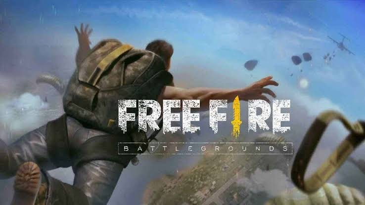
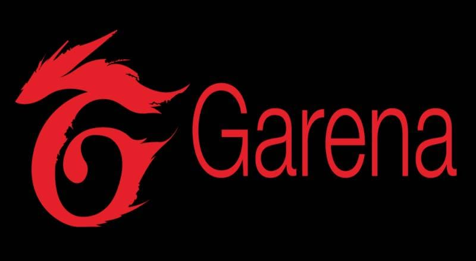
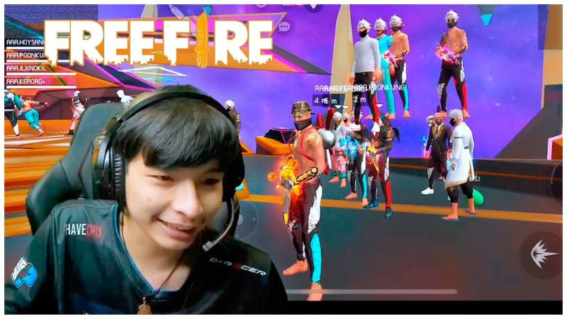
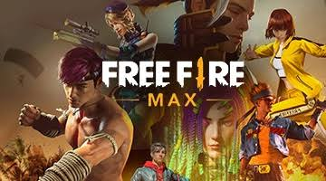
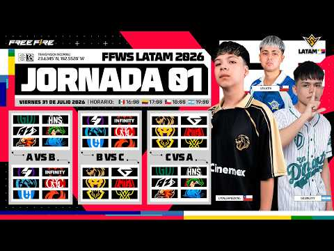
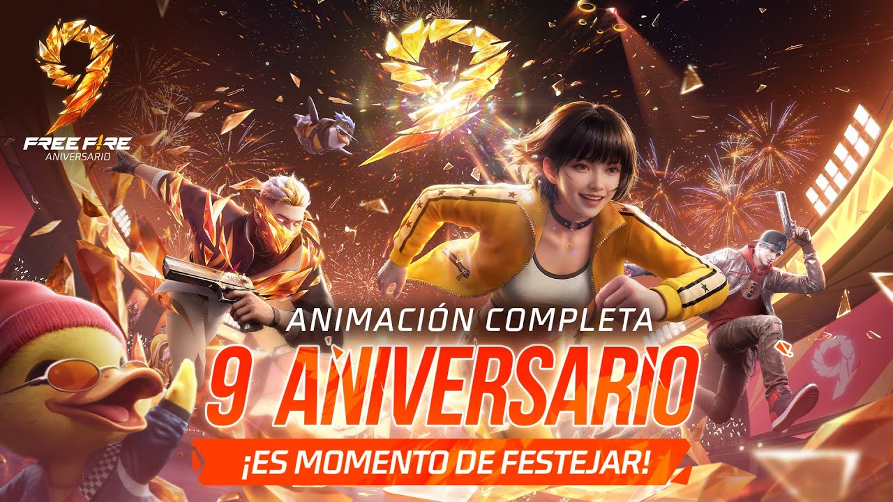

Historia de Free Fire
De un pequeño estudio vietnamita a fenómeno mundial de los battle royale móviles

Una presentación sobre el juego que conquistó millones de jugadores en todo el mundo
De un pequeño estudio vietnamita a fenómeno mundial de los battle royale móviles

Una presentación sobre el juego que conquistó millones de jugadores en todo el mundo

Free Fire fue desarrollado por 111dots Studio, un pequeño estudio independiente con sede en Vietnam. La idea nació a mediados de 2017: crear un battle royale accesible para dispositivos móviles de gama baja.
Garena (filial de Sea Limited, fundada por Forrest Li) adquirió los derechos de publicación y se involucró activamente en el desarrollo.
Las primeras pruebas Alpha comenzaron en agosto de 2017 en Vietnam. El 23 de agosto se liberó el primer APK (fecha que Garena celebra como aniversario).
El lanzamiento oficial global fue el 4 de diciembre de 2017 para Android e iOS. Extremadamente ligero y optimizado para celulares modestos.


Se añadieron personajes con habilidades, nuevos mapas, modos (Clash Squad), mascotas y eventos constantes.
En septiembre de 2021 nació Free Fire MAX con gráficos mejorados y compatibilidad de cuentas.
Actualizaciones regulares (OB) y colaboraciones con anime, artistas y celebridades mantienen el juego vivo.

Fenómeno cultural en Brasil, Indonesia, México y muchos otros países. Generó miles de millones en ingresos.
Escena competitiva profesional (Free Fire World Series) y una enorme comunidad de streamers y creadores.
Su gran ventaja: accesibilidad. Cualquiera puede jugar partidas rápidas e intensas.

En 2026 celebró su 9º aniversario con nuevo lobby 3D, sistemas de Skill Boost, Weapon Awakening y colaboraciones como Naruto Shippuden.
Sigue siendo uno de los juegos móviles más jugados del mundo, con más de 100 millones de usuarios activos.
¡Booyah! De un estudio pequeño a un ícono global.